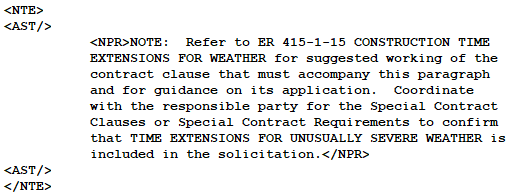
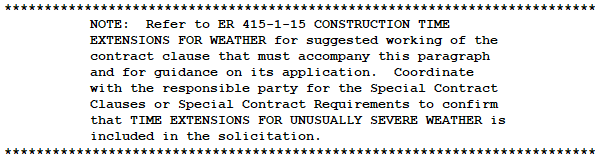
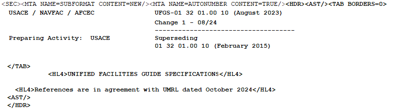
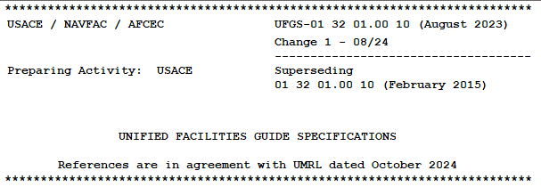

| TAGS |
<AST/> |
| DESCRIPTION |
This tag identifies the asterisk tag used with Notes and depicts the beginning and ending of a Note or Header. |
| SOURCE |
Insert menu > Tags or by using the keyboard shortcut F4. |
| RULES |
None -- Empty tag that contains no data; one of the few tags that does not have an end tag. |
| CHARACTER LIMITATIONS |
None |
Examples
 Illustrated below is the AST tag, with tags visible:
Illustrated below is the AST tag, with tags visible:

 Illustrated below is the AST tag, with tags hidden:
Illustrated below is the AST tag, with tags hidden:

 When used in the Header of the Section, the tag is used as follows when tags are visible:
When used in the Header of the Section, the tag is used as follows when tags are visible:

 When used in the Header of the Section, the tag is used as follows when tags are hidden:
When used in the Header of the Section, the tag is used as follows when tags are hidden:
